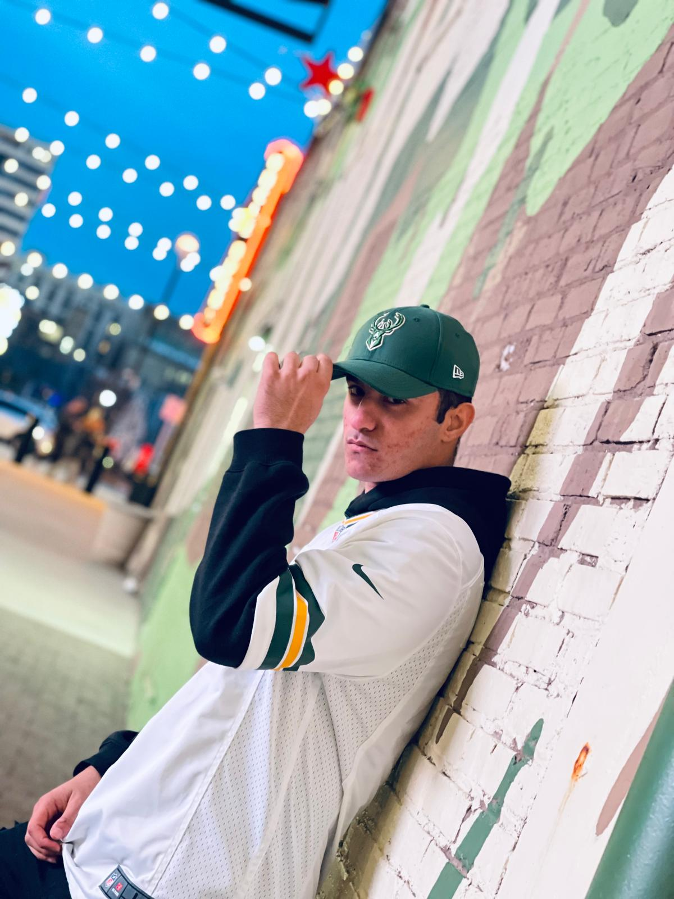
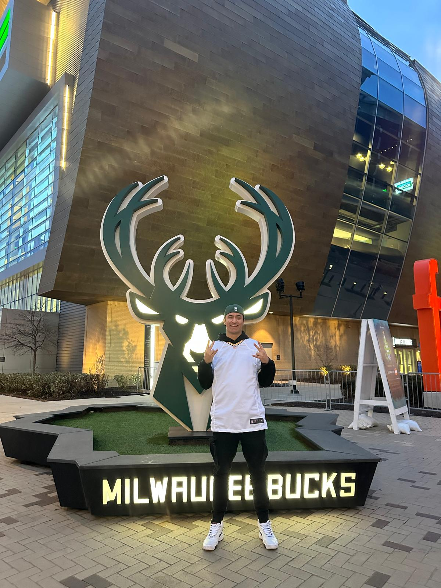
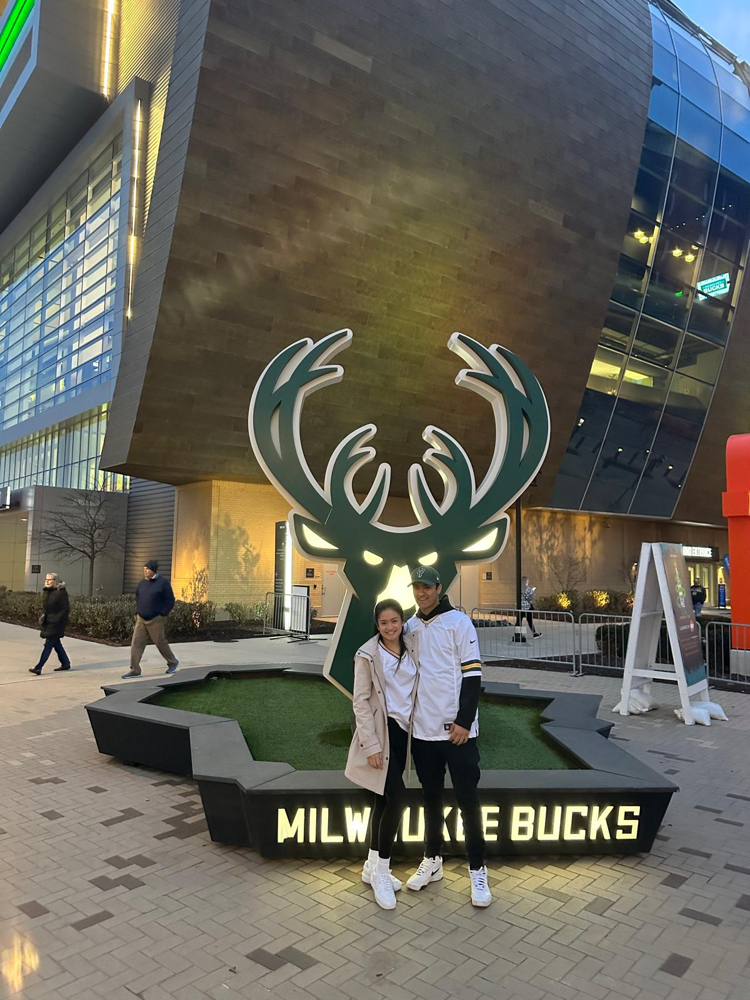

My First NBA Game Experience
When my girlfriend surprised me with the idea of watching the Milwaukee Bucks take on the Los Angeles Lakers, I instantly felt like a kid again. Back in Turkey, NBA games usually start at 4 or 5 a.m. because of the time zone difference — and staying up that late was always a challenge.
But this time, one of the NBA’s living legends, LeBron James, was coming to my state. I didn’t hesitate for a second. We bought two tickets, grabbed our jerseys and caps, and counted the days until game night.
The pre-game ceremony was nothing short of spectacular. There were light shows, music, dancing, and the overall energy was electrifying. Even though I didn’t manage to catch one of the free T-shirts they threw into the crowd, the entire experience was unforgettable.
The game was intense and competitive. While the Lakers had LeBron and Anthony Davis, we had Giannis, Brook Lopez, and the full support of Wisconsin. In the end, the Lakers narrowly won, but the atmosphere, the game, and seeing LeBron in person made it all worth it.
It was my first live NBA experience — and even though we lost, I walked away with memories I’ll never forget.